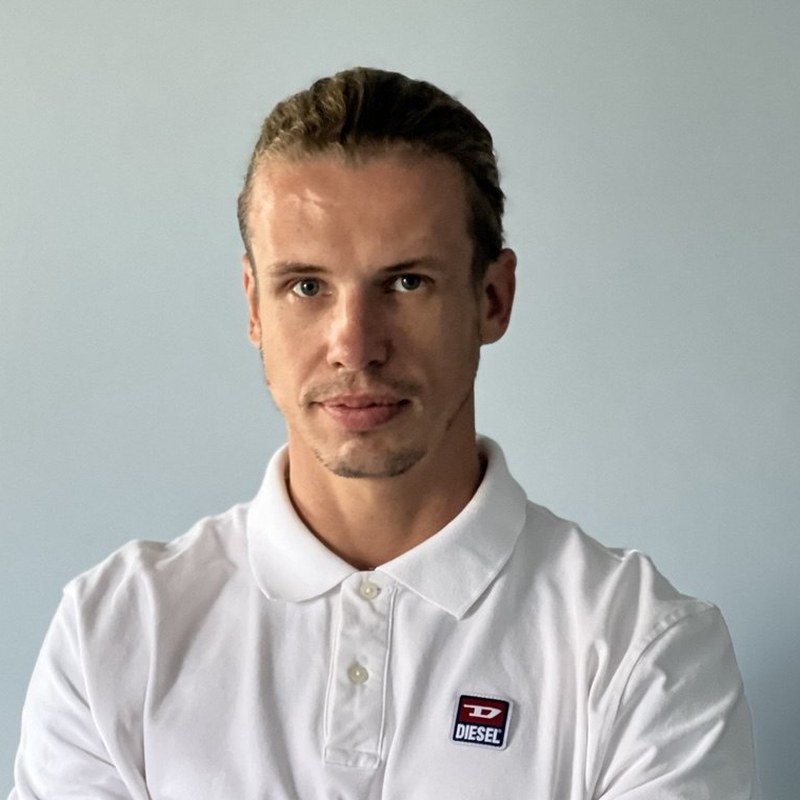

Коробов Евгений Владимирович
AI Automation Engineer · Архитектор AI-агентных систем
Около 20 лет я строил клиентские процессы людьми. Последние два года строю их кодом.
Сфера интересов: аудит, разработка и автоматизация клиентских процессов: продажи, реклама, обслуживание, эскалация проблем, сбор и аналитика данных.
Шесть боевых серверов в трёх юрисдикциях: 44 systemd-юнита, 18 служб в постоянной работе. Отказ основного LLM-провайдера отрабатывается автоматическим переключением, сервис не останавливается.
Резюме
Каждое направление в одном порядке: опыт, ради какой бизнес-цели, какими компетенциями, на каком стеке, чем измерялось и что вышло.
Управление персоналом с функциями клиентского обслуживания
Опытимею большой практический опыт построения с нуля отделов по работе с клиентами: телефонное обслуживание в звонковых центрах с количеством персонала до 350 чел. (Tele2), обслуживание по проблемным письменным обращениям с отделом в 50 человек (Tele2), консультации по техническим вопросам и настройкам оборудования с отделом 30 человек (Tele2).
Бизнес-цельувеличение маржинальности за счёт уменьшения стоимости клиентского обслуживания и увеличения лояльности и удовлетворённости абонентской базы.
Опыторганизация работы телефонных продаж услуг с отделом 5 человек (Высоцкий Консалтинг, ПОСЕЙДОН), организация работы по обслуживанию клиентов сети открытых офисов по Ростовской области (Ростелеком).
Бизнес-цельувеличение объёма и доходности продаж по телефону и в открытых офисах.
Компетенцииподбор персонала; проведение собеседований, ассесментов, мозговых штурмов; корпоративные и технические тренинги; разработка и внедрение процедур обслуживания, процедур эскалации трабл-тикетов, процедур мониторинга онлайн- и офлайн-показателей, процедур сбора статистики, процедур кроссфункционального взаимодействия; разработка и внедрение показателей KPI, мотивационных программ, отчётности по клиентам и персоналу; внедрение и разработка баз общего доступа и баз знаний; разработка должностных инструкций, систем обучения и введения в должность; разработка скриптов разговоров и процедур мониторинга качества обслуживания.
Стеканалитическое мышление, навыки работы с большими данными, архитектурное и пространственное мышление, развитая грамотная речь, начитанность, широкий кругозор, многозадачность и выносливость; рабочие системы: телефония Avaya, система заявок и тикетов Remedy на базе Oracle, корпоративная почта Lotus Notes.
KPIвремя обслуживания, время ответа, удовлетворённость клиентов, стоимость обслуживания, отток персонала, премия сотрудников, скорость эскалации и решения.
Результатсреднее время на обслуживание одного клиента сократилось с 120 до 100 секунд; средний процент премии сотрудников, выводимый из показателей эффективности и качества работы, вырос с 38% до 57%; ежемесячный отток персонала снижен с 7,5% до 1,2%; доля клиентов, удовлетворённых решением технических претензий, за полгода выросла с 65% до 85%, при этом обратная связь по 60% претензий предоставлялась в течение 24 часов после поступления претензии, по 80% - в течение 48 часов, по 96% - в течение 72 часов.
Автоматизация функций клиентского обслуживания
Опытразработка и внедрение единого хаба приёма и обработки лидов из разрозненных лид-каналов с автоматизацией этапов воронки продаж, в том числе интеграция с платёжными сервисами; разработка и внедрение AI-системы с продуктовыми базами данных векторной архитектуры (RAG) и долговременной памятью по клиентам.
Бизнес-цельуменьшение расходов на обслуживание и сопровождение продаж за счёт автоматизации посредством программных продуктов и AI-решений, увеличение конверсии из заявки в оплату.
Компетенциизнание API и правил Avito, Telegram, MAX, VK, Mail.ru; разработка среды для программирования AI-агентом посредством программных продуктов и инструкций; роутинг инструментов в соответствии с клиентским намерением; чанкинг и формирование продуктовой базы знаний и долговременной клиентской памяти; автоматизация формирования прайсов, коммерческих предложений, документов и отчётов; автоматическая актуализация баз данных по товарам и клиентам; создание систем мониторинга результативности автоматизации продаж и обслуживания; автоматизация анализа продукта и сайта клиента; автоматический подбор стиля общения на основе исторических данных; организация работы удалённого сервера для SaaS-системы; разработка фронтенда и бэкенда для систем с изоляцией данных в многопользовательских решениях; автоматическое обогащение данных по клиентам; работа с голосовыми сообщениями клиентов и голосовой ввод данных.
СтекPython, FastAPI, aiogram, python-telegram-bot, Celery, Redis, PostgreSQL, SQLite, SQLAlchemy, Alembic, Pydantic; ChromaDB + sentence-transformers (multilingual-e5-base) - векторный поиск и RAG собственной сборки, без LangChain; Whisper (распознавание голосовых сообщений); Node.js, React, TypeScript; Docker Compose, nginx, systemd, деплой по SSH; API Anthropic, OpenAI, DeepSeek, Groq, Cerebras, OpenRouter с мультипровайдерным переключением при отказе; Avito API, Telegram Bot API, ЮKassa; Playwright, BeautifulSoup; pytest; Claude Code, Codex GPT.
KPIвремя ответа на заявку, стоимость продажи, доходность с продажи, % возврата клиентов, средняя скорость формулировки ответа бота, монолитность системы + количество швов.
Результатсреднее время первого контакта с клиентом упало с 20 до 2 минут; среднее время предоставления ценового ответа клиенту уменьшилось с 40 до 20 минут; автоматическая отправка прайса клиенту в течение 10 минут после запроса против 50 минут до внедрения; более 200 лидов обслужено с применением автоматических программных решений; 4 месяца работы сервиса на двух компаниях - ПОСЕЙДОН и ГЕРМЕС; средняя скорость формулировки ответа агента - 7 секунд; работающий пример контура в открытом доступе - @consultant6opor_bot.
Эксплуатация и сопровождение решений в проде
Опытсопровождение 15 Telegram-ботов в постоянной эксплуатации, из них 12 клиентские агенты одного продукта на одном сервере с изоляцией окружений по клиентам; администрирование 6+ серверов в РФ, ЕС и США.
Бизнес-цельудержание сервисов в рабочем состоянии без выделенной службы поддержки и снижение стоимости владения решениями.
Опытразработка и эксплуатация внутренней системы учёта «Хранитель»: сбор расхода на LLM с боевых серверов, учёт выручки, расходов и хостинга по проектам, инвентарь серверов и реестр ботов, шифрованное хранение доступов с контролем срока ротации по каждому секрету.
Бизнес-цельконтроль затрат на ИИ и хостинг в разрезе проектов, исключение простоя из-за просроченных ключей и неоплаченных серверов.
Компетенцииразвёртывание сервисов systemd-юнитами, обновление без простоя, автоперезапуск, изоляция окружений; настройка nginx; базовая защита сервера (ufw, fail2ban, auditd); мультипровайдерное переключение LLM при отказе провайдера; алертинг о сбоях в Telegram; ротация ключей и секретов; наблюдение за очередями фоновых задач.
СтекUbuntu, systemd, journalctl, nginx, Docker Compose, ufw, fail2ban, auditd, деплой по SSH; Flower для наблюдения за очередями Celery; FastAPI и Telegram-бот с голосовым вводом как две панели над одной базой учёта; AES-GCM + PBKDF2 (600 000 итераций) для хранения доступов; DigitalOcean, Aeza, Яндекс.Облако.
KPIдоступность сервисов, время восстановления после сбоя, расход на LLM и хостинг по каждому проекту, количество просроченных ключей.
Результат44 юнита на боевом сервере, из них 18 служб проекта в постоянной работе; отказ основного LLM-провайдера отрабатывается автоматическим переключением, сервис не останавливается; расход на ИИ и хостинг виден по каждому проекту в одной панели.
Управление и автоматизация функций рекламы и маркетинга
Опытразработка сайтов с каталогами товаров и услуг с SEO-настройками для органической выдачи; подготовка рекламных кампаний на 300+ уникальных товаров в сфере строительства (услуги и товары); канал в MAX под управлением автоматической системы написания и публикации постов.
Бизнес-цельуменьшение расходов на рекламу путём создания поисково-оптимизированных материалов и автоматических систем контроля расходов на рекламу.
Компетенциипроцедуры анализа конкурентов; разработка рекламной стратегии проекта и метрик к ней; автоматический системный анализ рынка монтажа подземных инженерных систем электрики, водоснабжения, газоснабжения; сбор и каталогизация знаний о продуктах в нише.
СтекЯндекс.Директ, кабинет и API Avito, Photoshop, Canva, CorelDRAW; React, Next.js, TypeScript, HTML/CSS для сайтов-каталогов; Python + Playwright и BeautifulSoup для сбора данных о конкурентах и товарах; APScheduler для планировщика публикаций; API MAX; Claude Code.
KPIцена лида - средняя и по каждому из каналов.
Результатсредняя цена лида 100 ₽; затраты на содержание сайта упали с 10 тыс. ₽ в месяц до 2 тыс. ₽ в месяц; трафик на Avito вырос на 15% при снижении затрат на 25%; канал в MAX ведётся автоматически, посты пишутся и публикуются без ручного участия .
Создание собственного бренда одежды
Опытпостроение с нуля процессов по производству и продаже бренда спортивной одежды: футболки, майки, шорты, штаны, свитшоты, худи, лонгсливы.
Бизнес-цельполучение прибыли при продаже спортивной одежды через сети дилерских магазинов.
Компетенцииоткрытие ИП, разработка процессов анализа рынка конкурентов ниши, разработка процессов подготовки лекал и тестовых моделей в массовое производство, разработка и подготовка технических заданий на дизайн аппликационных принтов для художника, анализ сезонных потребностей и разработка коллекций, поиск и закупка тканей, расчёт рентабельности производства, формирование оптовой и розничной цены товара, организация работы швейного производства, поиск резервных швейных производств, анализ и разработка каналов продаж и коммуникации с потенциальными покупателями, организация фотосессий готовой продукции и поиск моделей, поиск и ведение дилерских магазинов, учёт отгруженного товара, учёт финансовых показателей.
СтекPhotoshop, CorelDRAW, Excel (себестоимость партии, рентабельность, оптовая и розничная цена, учёт отгрузок).
KPIприбыльность, скорость возврата вложенного капитала.
Результатпроизведено, отгружено и продано свыше 2 000 единиц товара, товар продан быстро и без остатка; проект свернул из-за разногласий с партнёром.
Автоматизация функций сбора и переработки больших данных
Опытсоздание погодного сайта для ветровых видов спорта vetrodozor.ru с прогнозом на ветер, солнце, осадки и волны на основе нескольких источников, с интеграцией с ЮKassa и мессенджером для получения онлайн-алертов.
Бизнес-цельполучение прибыли за счёт импортозамещения информационных услуг, ранее предоставляемых заблокированными в РФ ресурсами.
Компетенцииподключение ЮKassa; разработка логики и юзабилити сайта; разработка инструментов агрегации данных; разработка автоматической системы расчёта весов моделей прогноза; разработка сценариев вывода данных фронтендом; разработка автоматической системы сбора данных из открытых источников; организация среды для AI-ассистента по поиску тематических материалов на русском и английском с последующим написанием статей и публикацией по согласованию с живым редактором.
СтекPython, FastAPI, PostgreSQL (asyncpg), Alembic, Celery + Redis, APScheduler; метеомодели ECMWF, GFS, ICON, ICON-EU, UKMO со своей системой весов и калибровкой; React, TypeScript, Vite, Tailwind; React Native + Expo (мобильное приложение); Docker Compose, nginx, systemd; ЮKassa, Firebase Cloud Messaging (push-уведомления), aiogram; numpy, pandas; pytest; Claude Code.
KPIпредоставление прогноза с расхождением не более 15% с европейскими сайтами-аналогами.
Результатв настоящее время сайт доступен по указанному адресу; зарегистрировано 20 пользователей посредством доступных вариантов регистрации: Telegram, e-mail, мобильный телефон. Идёт бета-период, сайт предоставляет про-версию прогноза всем бесплатно.
Опытсоздание автоматических инструментов массовой работы и каталогизации деталей, чертежей и сборок КОМПАС-3D, подготовка разметки базы данных для выгрузки на сайт.
Бизнес-цельсокращение издержек за счёт понижения трудозатрат на подготовку чертежей к производству на ЧПУ.
Компетенции3D-проектирование в КОМПАС-3D; подготовка чертежей под лазерную резку ЧПУ; разработка инструментов автоматического заполнения подписей к чертежам по ГОСТ; разработка инструментов дедупликации.
СтекКОМПАС-3D, Python + win32com (управление КОМПАС через COM-API), форматы .m3d / .cdw / .dwg, ЕСКД и ГОСТ по оформлению чертежей, Claude Code.
KPIпорядок в базе, время подготовки чертежа из 3D-модели.
Результатвремя подготовки чертежа из 3D-модели сократилось с 15 до 5 минут.
Автоматизация консалтинга юридического и финансового состояния физических и юридических лиц
Опытреализация среды для AI-ассистентов с контурами юридической консультации и полной процессуальной поддержкой для граждан и организаций в соответствии с нормативно-правовой документацией РФ, в том числе с разработкой стратегии судебной практики и оформлением судебных документов; создание среды для AI-ассистентов с контурами финансового анализа и юридической консультации по вопросам налогового кодекса.
Бизнес-цельсокращение издержек на бухгалтерские, юридические и консультационно-бюрократические услуги с возможным выводом в отдельный консалтинговый продукт.
Компетенцииопыт работы с арбитражным процессуальным, гражданским процессуальным и гражданским кодексами; опыт представления собственных интересов в гражданском суде; опыт представления интересов ООО в арбитражном и апелляционных судах; разработка среды для AI-ассистента: функции каталогизации документации и правовой проверки собственных ответов, автоматическое формирование документов под печать, транскрибация и анализ заседаний, анализ судебной игры и работа с гипотезами, отслеживание процессуальных сроков и движения дел.
СтекАПК, ГПК, ГК и НК РФ; Python; ChromaDB + multilingual-e5-base для базы документов и правовой проверки ответов; Deepgram (транскрибация аудиозаписей заседаний); python-docx и генерация документов в DOCX/PDF под печать; автоматический мониторинг kad.arbitr, СудРФ, ФССП, ЕГРЮЛ и Федресурса по своим лицам и по контрагентам, с оповещением о движении; Claude Code.
KPIвремя подготовки документов, время подготовки к заседаниям.
Результатпоявилась возможность представлять себя или свою компанию в суде; время на подготовку документов сократилось вчетверо, а на подготовку к заседанию - вдвое.
Опыт работы
НейроАктив / FuturAI - основатель, AI-архитектор
AI-автоматизация для малого и среднего бизнеса · neiroaktiv.ru
Собственная продуктовая линия: AI-агенты, заменяющие линейный персонал в продажах, поддержке и операционной работе.
- B2B SaaS CRM для отделов продаж - флагманский продукт в проде: аккаунты с изоляцией данных, лиды из Avito и почты, прайс-листы, AI-бот, панель суперадминистратора
- AI-консультант в проде - 622 модуля Python, 135 000 строк: диалоговый контур с долговременной памятью, RAG-поиск по корпусу, генерация PDF-отчётов, приём платежей, админ-панель
- RAG-контур с нуля под этого консультанта, с инкрементальной переиндексацией, не ломающей живой индекс
- Цепочка отказоустойчивости LLM в базе данных - провайдер меняется и переупорядочивается без деплоя
- Фабрика AI-сущностей - общий пул навыков, из которого собираются дочерние агенты; 42 модуля в реестре с продуктовой матрицей
- Оркестратор задач - голос или текст в Telegram проходит классификацию, маршрутизируется в проект, исполняется агентом и возвращается отчётом
- Погодный хаб для ветровых спортов: веб и мобильное приложение поверх одного аналитического ядра
- Подписочный сервис с биллингом - парк серверных узлов, автовыдача и отзыв доступов, платежи через ЮKassa с идемпотентной обработкой, редакторский контур на LLM
- Эксплуатация - 6+ боевых серверов: провижининг, systemd-юниты, nginx, деплой по SSH, мониторинг, ротация секретов, разбор инцидентов
ООО «ПОСЕЙДОН» - учредитель, генеральный директор
Обслуживание и ремонт сварочной техники для пластиковых труб, B2B
- Построил все бизнес-процессы с нуля: продажи, маркетинг, цепочки поставок, отгрузки, учёт
- Вывел годовой оборот до 30 млн ₽
- Создал проектный отдел с базой чертежей на 2 000+ единиц запчастей
- Обеспечил стабильно 8 заявок в день на протяжении более 12 месяцев
- Заключил 150+ договоров со строительными компаниями Юга России и Северного Кавказа
- Веду учёт в 1С, расчётный счёт, налоговую отчётность и финансовое планирование; юридическое сопровождение - договорная работа, арбитражные дела, процессуальные документы
ООО «ЭКОРЕСУРС» - учредитель, директор
Комплектация магистральных инженерных систем, B2B
- Построил бизнес-процессы организации с нуля
- Вывел годовой оборот до 15 млн ₽
- Обеспечил 10 заявок в день на протяжении более 36 месяцев
- Заключил 300+ договоров со строительными компаниями Юга и Северного Кавказа
- Управлял дебиторской задолженностью, бюджетированием и юридической защитой компании в судах
ООО «ИСК СтройЮгКомплект» - соучредитель, коммерческий директор
Комплектация магистральных инженерных систем, B2B
- Увеличил годовой оборот денежных средств более чем в 10 раз
- Закрыл сделок на сумму свыше 150 000 000 ₽
- Обеспечил 13 заявок в день на протяжении 20 месяцев
- Разработал и внедрил собственную CRM и базу регистрации обращений с сайтов и телефона
- Внедрил онлайн-просчёт заказа - расчёт стоимости прямо во время звонка или встречи
- Собрал базу 1 500 активных клиентов и 20 поставщиков, 200+ договоров
- Запустил 6 посадочных страниц, 2 сайта, 3 страницы на торговых площадках с 10 000+ позиций; семантическое ядро, Яндекс.Директ и Google Adwords по регионам Юга и Северного Кавказа
ПАО «Ростелеком» - руководитель группы клиентского опыта и обслуживания
Телекоммуникации
- Полностью нормализовал абонентский отток до целевых показателей компании за полгода
- Разработал и внедрил схему работы с дебиторской задолженностью: снижены и сумма долга, и число клиентов-должников
- Централизовал архивы абонентских дел из более чем 50 населённых пунктов
- Управлял сетью центров продаж и обслуживания Ростовской области: стандарты, срезы знаний, «тайный покупатель», подбор персонала
- Анализировал каналы оплат и самообслуживания: Сбербанк, Почта России, ОСМП, CyberPlat, Comepay; сайт, личный кабинет, IVR
Tele2 Россия - руководитель контакт-центра, Ростов-на-Дону
Путь внутри компании: оператор → супервизор → руководитель группы (30 человек) → руководитель бэк-офиса (50 человек) → руководитель контакт-центра (350 человек)
Контакт-центр, 350 подчинённых. Круглосуточное обслуживание B2B и B2C 28 регионов России.
- Снизил ежемесячный отток персонала с 7,5% до 1,2% через концепцию внутреннего сообщества: корпоративный журнал, ценностные коммуникации, командообразование, HR-бренд через внешнюю медийную активность
- Сократил среднее время обслуживания клиента с 120 до 100 секунд
- Поднял средний процент премии, выводимый из показателей эффективности, с 38% до 57%
- Внедрил real-time мониторинг: интерфейс визуализации индивидуальных и групповых показателей на больших ЖК-дисплеях в операторских залах
- Внедрил отчётность с дискретностью 15 минут и регламент трафик-менеджмента, включая работу при превышении реального трафика над прогнозом
- Разработал процедуры эскалации массовых проблем и антикризисного управления при дефиците персонала
Бэк-офис, 50 подчинённых, построен с нуля. Письменные претензии абонентов 36 регионов.
- Организовал подразделение с нуля: подбор, структура, процессы, кроссфункциональное взаимодействие
- Поднял долю удовлетворённых решением с 65% до 85% за полгода
- Выстроил обратную связь: 60% претензий за 24 часа, 80% - за 48, 96% - за 72
- Наладил работу с претензиями на спам и мошенничество во взаимодействии с АРОС, Мегафон, МТС, Смартс, НСС; поиск платежей с основными платёжными системами
ООО «Инсайт Альянс» / «Высоцкий Консалтинг» - руководитель отдела продаж
Бизнес-консалтинг и тренинги, B2B
- Построил отдел продаж с нуля: набор, планёрки, цели, контроль исполнения, управленческий коучинг
- Написал должностные инструкции, скрипт продаж, KPI-отчётность, материальную и нематериальную мотивацию
- Увеличил клиентскую базу на 30%
- Запустил «Клуб владельцев бизнеса» - остался работать на постоянной основе
- Организовал и провёл 3 тренинга по три уикенда, часть семинаров вёл сам
- Планировал бюджеты: мероприятия, фонд оплаты труда, офис, реклама
ООО «Авенир» - исполнительный директор
Продажа строительных материалов, B2B
- Разработал расчёт стоимости трубы из сырья по параметрам - считать стало можно прямо во время звонка клиенту. Это была первая моя автоматизация: тот же принцип, что и в сегодняшних ботах
- Вывел продукты компании на первые места среди конкурентов на площадках FIS и «Пульс цен»
- Собрал клиентскую базу с историей заказов и обращений
- Запустил направление электрокабеля и трубной оболочки для его прокладки
- Ввёл обязательную статистику по конверсии и скрипт холодного обзвона
Собственный бренд спортивной одежды - ИП, основатель
Производство и розничная торговля через сеть дилерских магазинов
- Построил с нуля весь цикл: от лекал и тестовых моделей до отгрузки в дилерские магазины
- Поставил производство: работа со швейным цехом плюс резервные площадки, чтобы не встать из-за одного подрядчика
- Писал технические задания на дизайн аппликационных принтов, собирал коллекции под сезонный спрос
- Считал рентабельность партии, формировал оптовую и розничную цену
- Нашёл и вёл дилерские магазины, организовывал фотосессии продукции
- Произведено, отгружено и продано свыше 2 000 единиц товара, без остатка. Проект свернул из-за разногласий с партнёром
Образование
Южный федеральный университет - химик, специальность «Химия», специализация «Коллоидная химия», 2004-2010.
Расчётная часть программы: математика 680 часов, численные методы и программирование, новые информационные технологии, квантовая механика и квантовая химия, кристаллохимия, строение вещества. Выпускная работа по свойствам углеродсодержащих пластичных смазок - отлично.
Донской государственный технический университет - аспирантура, не окончена.
Южный федеральный университет - преподаватель, дополнительное к высшему, 2005-2010, 1 400 часов.
Профпереподготовка: суицидология - 450 часов (2024), психолого-педагогическое сопровождение миграционных процессов - 72 часа (2024), управление в стиле коучинг - 102 часа (2011).
Языки: русский - родной, немецкий - B1, английский - свободное чтение технической документации.
Честно о границах
Сразу говорю, чего у меня нет, чтобы это не выяснялось на техническом интервью.
- LangChain, LangGraph, LlamaIndex - не использую. RAG собран без них, напрямую на ChromaDB и sentence-transformers. Понимаю, что фреймворк делает под капотом, но опыта работы с самим фреймворком нет
- Kubernetes - нет. Инфраструктура на Docker Compose и systemd
- Реранкинг и формальная оценка retrieval - нет. Только векторный поиск, качество оценивалось вручную
- LLM-observability (Langfuse и подобное) - нет
- Английский разговорный - нет. Свободно читаю техническую документацию, но собеседование и созвоны на английском не потяну
- Руководство командами разработки в найме - нет. Двадцать лет управления - это контакт-центр, бэк-офис, отделы продаж и собственные компании, не команда инженеров в продуктовой компании
- Промышленная разработка десять лет - нет и не заявляю. Как инженер работаю два года, разрабатываю в паре с AI-агентами. Моя часть - архитектура, интеграция, деплой, эксплуатация, разбор инцидентов
Готов к техническому интервью с разбором любого проекта: архитектура, код, деплой, инциденты в проде и как они разбирались.
Проекты в деталях
Доказательная часть к блокам выше: что за продукт, какая задача решалась, как сделано и на чём.
Multi-tenant CRM для отделов продаж
ЗадачаЛиды приходят из Avito и корпоративной почты, теряются между каналами, менеджер собирает воронку руками.
РешениеСобственная платформа на отдельном домене с SSL: аккаунты с изоляцией данных, единая воронка из двух каналов, прайс-листы с ролевой наценкой, аналитика продаж, AI-бот обработки обращений, панель суперадминистратора. Правила фильтрации почты двух уровней - глобальные и переопределяющие их клиентские, с синхронизацией недостающих глобальных без потери локальных. Денормализация горячих полей списка под быструю выдачу. Slim-режим развёртывания для облегчённых инсталляций.
Плюс агент авто-онбордингаОбходит сайт нового клиента до 8 страниц, извлекает профиль компании и предметную область, обогащает данные через справочник по ИНН и настраивает бота под клиента - без ручной работы менеджера.
FastAPI · Next.js 14 · PostgreSQL · Redis · Celery · WebSocket · Docker Compose · nginx · Let's Encrypt
Векторный поиск по корпусу знаний, собранный без фреймворков
ЗадачаКонсультант должен отвечать по корпусу лекций, таблиц и документов, а не выдумывать из памяти модели.
РешениеПолный контур с нуля: ingest → чанкинг → эмбеддинги → ChromaDB → query-слой → HTTP-сервер поиска. Мультиязычные эмбеддинги multilingual-e5-base через sentence-transformers с корректными префиксами query/passage и нормализацией векторов. Чанкинг 1200 символов с перекрытием 400 - треть, выбрана под структуру корпуса. Инкрементальная переиндексация по источнику: старые чанки документа удаляются перед вставкой новых, живой индекс при этом не ломается. Метаданные и фильтрация по коллекциям, манифест проиндексированного со статистикой чанков.
Почему без LangChainСделано на ChromaDB и sentence-transformers напрямую. Это значит, что я знаю, что фреймворк делает под капотом, - потому что делал это руками.
ChromaDB · sentence-transformers · multilingual-e5 · Whisper · Python
Мультипровайдерный роутинг с автоматическим fallback
ЗадачаСервис на одном LLM-провайдере ложится целиком, когда провайдер отказывает, дорожает или блокирует аккаунт.
РешениеМаршрутизация между Anthropic, Google Vertex, OpenAI, Groq, Cerebras, DeepSeek, OpenRouter и Ollama с приоритетами. Конфигурации моделей и порядок живут в базе данных, а не в коде: замена провайдера - это UPDATE, а не деплой. Отдельно решена практическая проблема моделей с thinking-токенами, которые съедают лимит и обрывают длинные JSON-ответы.
Проверено боемОсновного провайдера заблокировали без предупреждения. Все зависимые сервисы переведены на резервные модели за один день, без простоя. Контур деградации был спроектирован до инцидента, а не после.
Python · httpx · PostgreSQL · Anthropic SDK · Vertex AI · OpenAI SDK · Groq · Cerebras · DeepSeek · Ollama
«Хранитель» - контур учёта ключей, расхода и денег
ЗадачаКлючи от восьми провайдеров и десятка сервисов лежат по разным местам, расход на LLM виден только постфактум в счетах, а стоимость проекта не сводится с его выручкой.
РешениеЗашифрованное хранилище секретов: AES-GCM, ключ выводится через PBKDF2 с 600 000 итераций, по каждому секрету считается срок до ротации. Сборщики на боевых серверах отдают потребление по провайдерам в ingest-эндпоинт, защищённый токеном. Панель сводит расход, выручку и хостинг по проектам, ведёт инвентарь серверов и реестр ботов.
Два интерфейса над одной базойTelegram-бот с голосовым вводом и запросами на естественном языке - и веб-панель на FastAPI с сессионной авторизацией. Синхронизация с серверами DigitalOcean и Aeza вынесена в отдельные systemd-юниты.
Python · FastAPI · aiogram · SQLite · AES-GCM · PBKDF2 · systemd · Jinja2
Долговременная память и самоанализ агентов
ЗадачаДиалоговый агент забывает клиента между сессиями и не замечает, когда сам себе противоречит.
РешениеСквозной профиль пользователя между сессиями: накопленные факты, история обращений, контекст прошлых диалогов - агент помнит клиента спустя месяцы. Отдельно решена эксплуатационная часть: рост профиля не разрушает качество ответов и не съедает контекстное окно. Поверх - контур самопроверки до выдачи ответа по формализованному набору критериев: противоречия с ранее сказанным, сглаживание вместо прямого ответа, деградация связности. При срабатывании агент переформулирует сам.
Что делаю сейчасМаршрутизация по намерению: классификация запроса по двум независимым осям вместо плоского классификатора - что сделать (детерминированный вызов инструмента кодом) и как ответить (тон, глубина, следующий шаг). Самые частые реплики пересекают обе оси, и плоский классификатор обязан выбрать одно и ошибиться. Состояние маршрута работает как память: незакрытая ветка - элемент состояния, к которому агент возвращается сам. Пороги уверенности двухуровневые: объективный по близости в векторном поиске плюс самооценка модели с калибровкой по логам, потому что модели систематически переуверены.
Правило, выведенное на практикеЧто вынесено в инструмент с проверяемым контрактом - работает сразу; что осталось инструкцией в промпте - конкурирует с двумя десятками других правил и проигрывает. Поэтому сначала инструменты, потом классификатор поверх них.
Python · Anthropic SDK · PostgreSQL · агентные протоколы
Два самых дорогих внешних подряда, переведённые в агентов
AI-юристВедёт компанию целиком: договорная работа, претензии, процессуальные документы, позиция по делу, сопровождение арбитражных и гражданских дел. Работает на связке структурированной карточки дела, библиотеки шаблонов и поиска по нормам. Python-сборка готовых документов из карточки и шаблона, синхронизация материалов в Notion и облако.
AI-бухгалтерВедёт учётный контур и готовит ответы на требования налоговой: разбор требования, подбор применимых норм, формирование пояснений, сборка комплекта подтверждающих документов.
Почему это сильный кейсПрименяется в собственных компаниях, а не на демо-данных. Агент не снимает ответственность с человека, но снимает объём и держит сроки - а сроки по налоговым требованиям и процессуальным документам жёсткие.
Python · Notion API · шаблонизация документов · LLM-контур
Погодный хаб для ветровых спортов: веб, мобайл, аналитика
ЗадачаСвести прогнозы из нескольких независимых источников в решение «ехать или не ехать» под конкретную дисциплину.
РешениеАгрегация прогнозов, приведение к единой модели, расчёт производных показателей, графики и визуализации, алерты по пороговым условиям. Backend на FastAPI и PostgreSQL с миграциями Alembic и фоновыми задачами на Celery. Веб-приложение на React и мобильное на React Native с push через Firebase - оба поверх одного аналитического ядра. Приём платежей.
FastAPI · PostgreSQL · Alembic · Celery · React · React Native · Expo · Firebase · Recharts · Docker
Подписочный сервис с биллингом и автовыдачей доступов
ЗадачаПродавать доступ и обслуживать подписчиков без ручной работы: оплата, выдача, продление, отзыв, контент-канал.
РешениеПарк серверных узлов в нескольких юрисдикциях, автоматическая генерация и выдача персональных конфигураций после оплаты, продление и отзыв доступа по расписанию. Приём платежей через ЮKassa с идемпотентной обработкой уведомлений: повторная доставка события не выдаёт доступ дважды. Редакторский контур на LLM с автопостингом в канал и мультипровайдерным fallback - именно он и пережил блокировку основного провайдера.
Python · Pyrogram · ЮKassa · PostgreSQL · systemd · nginx
Разбор проприетарного формата чертежей КОМПАС-3D
ЗадачаБаза чертежей на 2 000+ единиц с дубликатами и устаревшими версиями; КОМПАС на машине не всегда установлен.
РешениеРазбор .cdw напрямую на чистом Python: ZIP-контейнер, многопоточный zlib, UTF-16. Поверх - аудит базы: поиск дубликатов по паре «папка + наименование», выбор актуальной версии по дате модификации, автоматический перенос устаревших в карантин, пакетная правка штампов. Альтернативная ветка через COM API самого КОМПАСа.
Python · zlib · UTF-16 · COM API · пакетная обработка
Голосовой ввод и расшифровка речи
ЗадачаДиктовать вместо набора и превращать записи встреч и лекций в текст, пригодный для дальнейшей обработки.
РешениеЛокальное распознавание на Whisper с выбором размера модели под задачу, обработка длинных записей, выгрузка результата в рабочий формат. Небольшой по объёму проект, но закрывает ежедневную задачу и служит источником данных для RAG-индекса.
Whisper · PyTorch · FFmpeg · Python
Кроме этого: агент авто-онбординга, фабрика AI-сущностей из общего пула навыков, оркестратор задач через Telegram и Notion, парсер банковских выписок, AI-планировщик финансов (в разработке), автопубликатор контента по расписанию, система ведения судебных дел с генерацией процессуальных документов, развёртывание и эксплуатация self-hosted агентного фреймворка, разработка адаптера подписочного доступа уровня фреймворка.